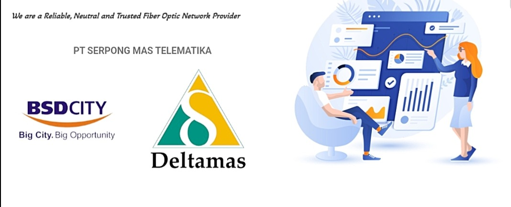

Profil Perusahaan
Reliable, Neutral and Trusted Fiber Optic Network Provider
PT Serpong Mas Telematika merupakan penyedia jaringan fiber optic yang merencanakan, membangun, dan mengelola jaringan fiber optic.

Portal akses jaringan Wi-Fi untuk mendukung pengelolaan pengguna, autentikasi, hak akses, session, dan penggunaan jaringan secara lebih terstruktur.
Satu tempat untuk memilih akses Guest atau masuk sebagai pengguna terdaftar.
Ringkasan informasi perusahaan berdasarkan situs resmi SMTEL.